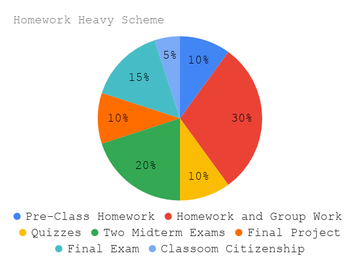
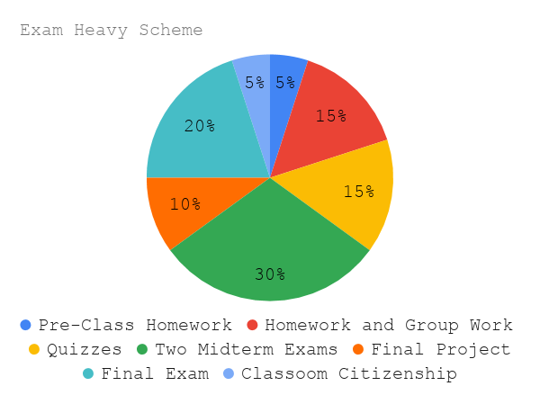

Syllabus
Linear Algebra
Math 324/524
Spring 2020
Section 1: MoTuWeFr 11:00AM - 11:50AM in HHH 309B (MWF) and in HHH 312 (Tu)
Section 2: MoTuWeFr 3:00PM - 3:50PM in Schneider 303
Instructor
Mckenzie WestShe/Her/Hers
Office: HH 524
Drop-in Hours: Mon 1:30-2:30pm, Tue 9-10am, Wed 12-1pm, Fri 1:30-2:30pm
E-mail: WestMR (at) uwec (dot) edu
Course Description
An introductory course in linear algebra including matrix algebra, systems of linear equations, vector spaces, linear transformations, eigenvalues, and applications. Also covers methods of proof and a survey of student-faculty research.Course Outcomes
This course helps students meet the following Mathematics Department Common Learning Outcome(s):- C3: Students will be able to write mathematical proofs.
- C4: Students will be able to work independently and collaboratively on mathematical problems.
- Solve a system of linear equations (and describe what the solution means).
- Perform matrix operations and state/apply properties of these operations.
- PROOF writing! Be able to compose well-written and correct proofs of mathematical statements
- Compute matrix determinants using several different methods.
- Define several terms associated with vector spaces and prove mathematical statements using these terms.
- Understand geometric properties in terms of inner projects and develop math reading skills in order to apply least squares analysis.
- Use the definition and matrices to discover and prove properties of linear transformations.
- Compute eigenvalues, eigenvectors, and eigenspaces of a matrix and determine if diagonalizing a specific matrix is possible.
Equity and Inclusion
A major component of this course is group work. I ask that you recognize that all of your classmates have different mathematical background and experiences. You will work with every single person in this class at some point in time. Respect one another; give everyone a space to answer a question, to ask a question, to have an idea, and to be wrong.Required Textbook
Elementary Linear Algebra, Seventh Edition, by LarsonImportant Dates
- Last Day to Drop: February 14
- Last Day to Switch to Pre-rec Math Course: February 21
- Last Day to Withdraw: April 17
Evaluation
- Grading Schemes
There are two grading schemes.
You will be assessed by whatever is best for you.
Pre-Class Homework: 10%
Homework and Group Work: 30%
Quizzes: 10%
Two Midterm Exams: 20%
Final Project: 10%
Final Exam: 15%
Classroom Citizenship: 5%
Pre-Class Homework: 5%
Homework and Group Work: 15%
Quizzes: 15%
Two Midterm Exams: 30%
Final Project: 10%
Final Exam: 20%
Classroom Citizenship: 5% - Pre-Class Homework
Before every day of class a reading and reflection question will be assigned. Questions that arise from the reading will help guide class discussion the day they are due. - Written Homework and Group Work
Homework will be assigned throughout the course and due weekly on Wednesdays. There will be both computational and written exercises. These problems will be graded for accuracy and are expected to be complete, well-organized, and clearly written. - Quizzes
Quizzes will occur several times throughout the semester at the end Chapters 1, 2, 4, and 6. An additional quiz will occur halfway through Chapter 4. They will usually take about 15 minutes at either the end or the beginning of the class period. - Midterm Exams
There will be two midterm exams. Exams are closed book and closed notes. Calculators will be permitted.- Exam 1: Tuesday, March 17
- Exam 2: Friday, April 24
- Final Project
Working in small groups, you will be studying, presenting on, and writing about an application of linear algebra. - Final Exam
The cumulative final exam. As with the midterm exams, the final exam will be closed book and closed notes. This exam will be a common final with the other section of the course. - Classroom Citizenship
This classroom will allow us to cultivate and grow a community in which everyone is participating together. Please arrive on time and stay the entire class period. If you need to leave early or arrive late for any reason please let me know. I will also expect you to participate during in class worksheets and activities. Treat your classmates with respect and always remember that everyone belongs.
Collaboration
You are expected to work together on homework sets, though everyone is required to write up and submit their own solutions.Make-up Policies
No late homework will be accepted. If you must miss a quiz/exam/or a class with a group work assignment, you must inform me beforehand so we can make other arrangements. Please note that a “must miss” does not include going on vacation/home, not being prepared, or work.If you are excused for a university field trip or sporting event, inform me and provided the documentation at least two class periods before the event. Although students will not be penalized when absences are authorized, it is important to understand that in some cases the make up work may be significantly different from the original assignments, exams, etc. Please note that an excused absence will not penalized the attendance bonus if the student follows the above procedure.
Resources
- Drop-in Hours: These are designated times where I will be available in my office. Stop by with questions or concerns about the class. Every question is welcome. We all have questions and need clarifications sometimes. HH524
- Student Success Center: CENT2104 - A wonderful resource that includes:
- Academic Skills Center - Free peer tutoring!
- Services for Students with Disabilities - Any student who has a disability and is in need of classroom accommodations should contact the instructor and the Services for Students with Disabilities Office in Centennial Hall 2106 at the beginning of the semester
{kind=link}
Accessibility
If you are in need of accommodations please speak with me before/after class or in my office as soon as possible so that we can make arrangements that suit your needs.Academic Conduct
Please do not ask the internet to do your homework for you. For one, the answers are often wrong. For two, we're here to learn. We do homework to prepare ourselves for the exam, if you're not understanding the homework on your own, how will the exam go?I ask that you only submit your own work in order to ensure that you are indeed the one learning the material and meeting the objectives. The disciplinary procedures and penalties for academic misconduct are described on the UW-Eau Claire Dean of Students web site: https://www.uwec.edu/kb/article/blugold-student-conduct-code/.
Course Notes
Do Not Post Class Notes OnlineI do not consent to having notes from my class uploaded to the internet, including commercial note-selling websites such as StudySoup. Some companies target students and solicit course material acting as if they are working in coordination with colleges and universities, but that is not true for this class. This means that you do not have the right to provide your notes to anyone else or to make any commercial use of them without express prior permission from me. Unless you are a qualified disabled student, you do not have the right to record my lectures. Inappropriate use of notes may be in violation of the Blugold Conduct Code and sanctions will be pursued accordingly.
Attendance Policy
You are expected to attend class every day. Consistent with university policy, attendance will be taken each class period to ensure you keep your insurance and financial aid.Technology
Students are encouraged not to engage in disruptive use of technology.The use of mathematical software may be allowed for certain assignments. However, this technology is not to be used on any exam.